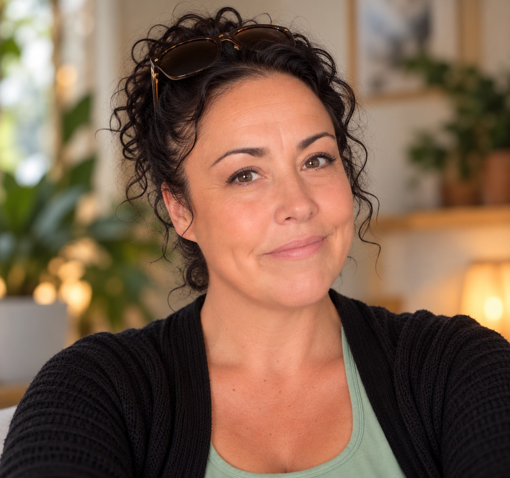

About Me
I'm Janine Conway.
I'm a person-centred counsellor and founder of Let Me Help.

For over 20 years, I have worked with people through employability, mentoring, coaching and personal and social development. Throughout that time, my work has centred around helping people navigate challenges, recognise their strengths and find ways to move forward in their lives.
A significant part of my work has involved supporting young people and young adults. I often found that what someone appeared to need help with on the surface wasn't always the whole story. Mental health difficulties, grief and loss, learning difficulties, difficult life experiences, behaviour, relationships and low self-worth could all be part of what was happening underneath.
That experience was one of the main reasons I chose to train as a counsellor. I wanted to be better equipped to understand and support people when practical advice, mentoring or encouragement alone wasn't enough.
My counselling experience
Person-centred and trauma-focused
I have over a year of counselling experience working with young adults and have also worked as a counsellor with Manchester Mind, supporting clients experiencing a wide range of difficulties.
I am a person-centred counsellor and practise in a trauma-focused way.
Through my training and counselling work with Manchester Mind, I have developed an understanding of trauma and the ways in which experiences can continue to affect us long after they have happened. I have continued to develop this knowledge through my own reading and learning around trauma-informed practice.
I believe that something doesn't have to appear significant to somebody else to have a lasting impact. Experiences from our past or present can affect how we see ourselves, our relationships and the choices we make.
What matters isn't whether somebody else thinks you should have been affected by something. What matters is how it affected you.
More than professional experience
Understanding shaped by life as well as training
My understanding of people hasn't come from training and professional experience alone.
My own life has given me an understanding of difficult beginnings, dyslexia, caring responsibilities, grief and loss, and the impact that disability and visual impairment can have not only on an individual, but on the people around them.
These experiences don't mean I know what your experience feels like, everybody's circumstances are different. But they have influenced the way I listen and strengthened my belief in looking beyond what we see on the surface.
I also have significant professional experience working with people affected by offending and the criminal justice system, including four years working for Nacro, a crime reduction charity, and a year working as a Community Service Supervisor.
This is an area particularly important to me. I understand that offending behaviour rarely tells the whole story of a person. Difficult life experiences, relationships, trauma, homelessness, substance use, mental health, loss and the environment around us can all play a part.
I have a particular interest in counselling people who may be at risk of offending, have offended in the past, feel judged or defined by their history, or recognise that they want to make different choices about their future.
I believe people are more than the things that have happened to them, the choices they've made or the labels they've been given.
You don't need to fit neatly into a particular category to work with me. We start with you.
Thinking about counselling?
If you'd like to find out more about how I work, you can read about my approach or get in touch.
My Approach Get in touch